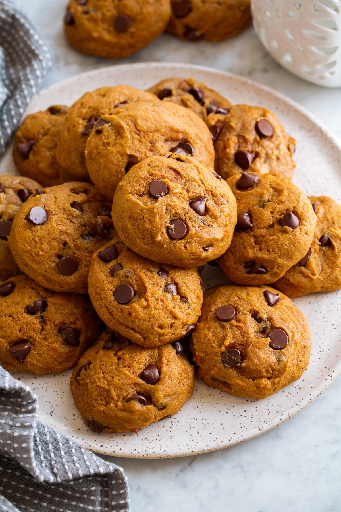
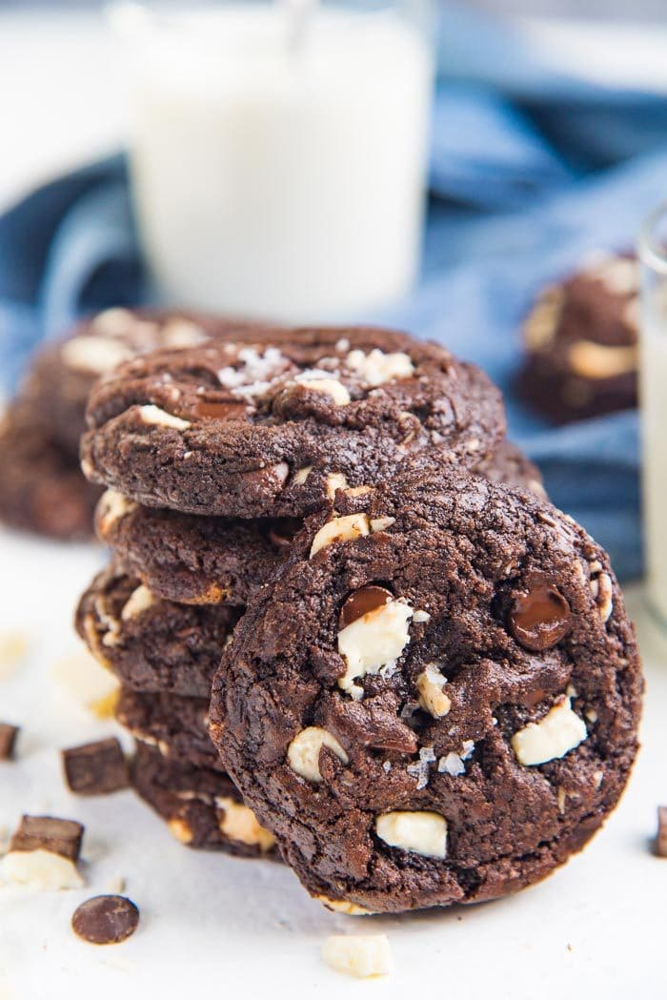
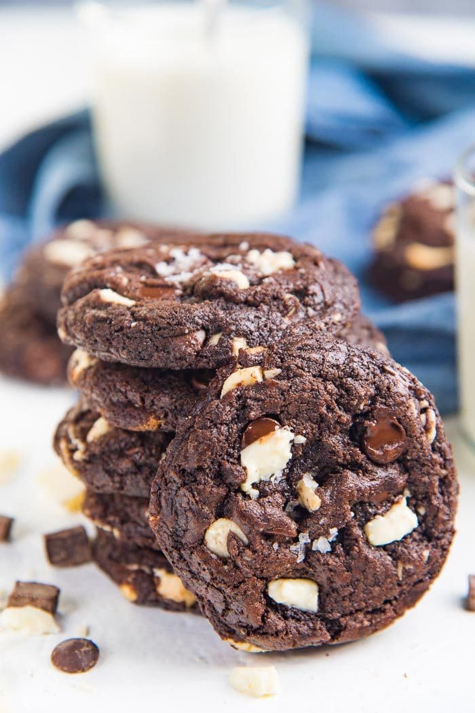
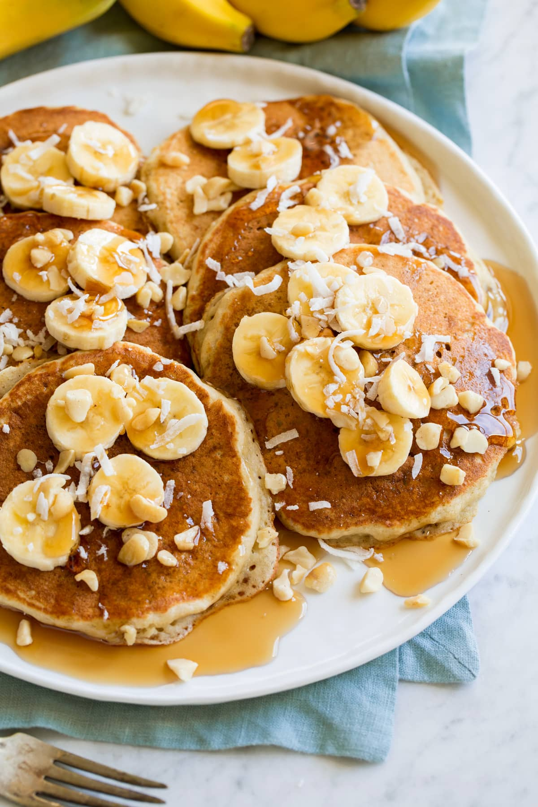
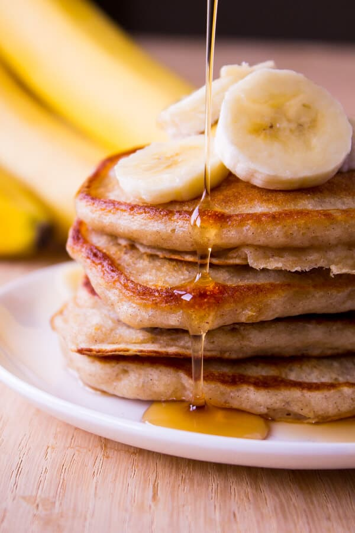
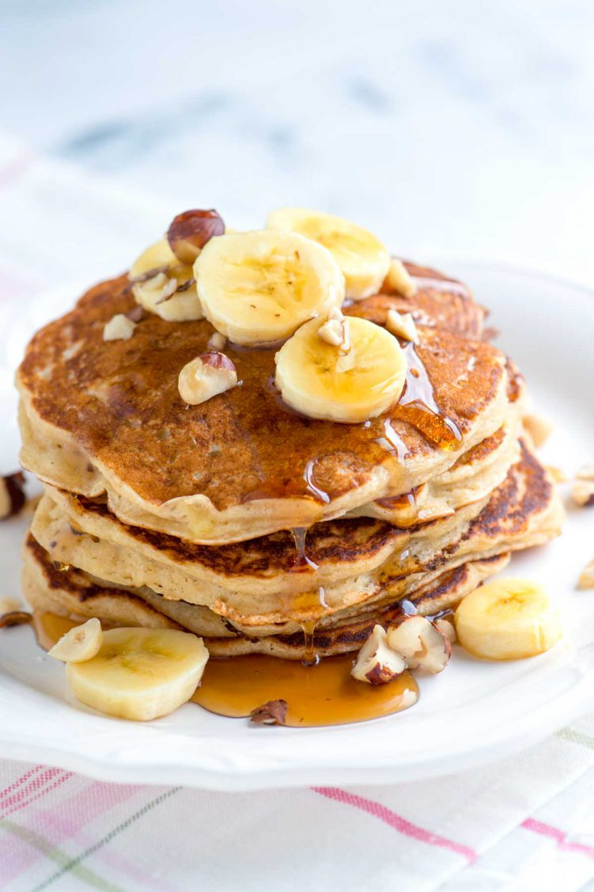
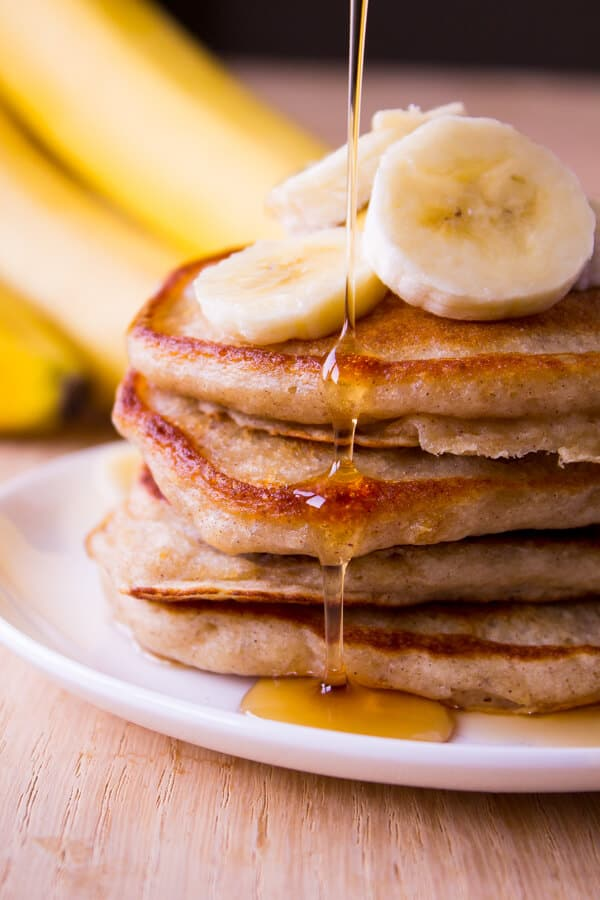
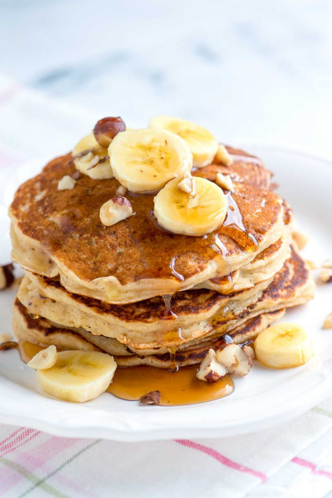
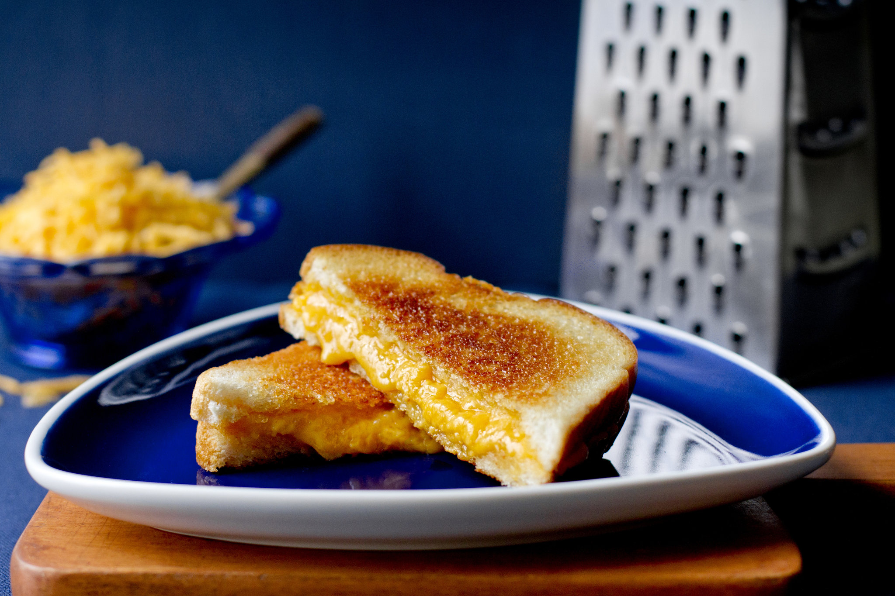

Recipes
Double Chocolate Cookies

My daughter learned to make these cookies at a baking camp at Zingermanns and has tweaked the recipe to fit the taste buds of her siblings.
They are extremely sugary so the salt helps to balance it. Note, these cookies are best eaten very quickly.
Recipe Ingredients
- Unsalted butter
- Granulated Sugar
- Packed light or dark brown suga
- Large egg
- Pure vanilla extract
- Semi-sweet chocolate chunks (melted)
- All-purpose flour
- Natural unsweetened cocoa powder
- Baking soda
- Salt
- Semi-sweet chocolate chunks
Recipe Steps
- In a mixing bowl cream together the butter, granulated sugar, and brown sugar
- Add the egg and vanilla extract and beat well
- Add the melted chocolate
- In a separate bowl combine the flour, baking soda, cocoa powder and salt
- Combine the wet and dry ingredients
- Add the unmelted chocolate chunks
- Form 15 cookies and place on a baking sheet
- Cooke for 12 to 13 minutes at 350 degrees
Additional Food images
 

Banana Pancakes
Banana pancakes are a delightful and healthy alternative to traditional pancakes.
blending ripe mashed bananas with eggs for a naturally sweet, fluffy treat, perfect for a nutritious breakfast.
Recipe Ingredients
- Ripe bananas
- Eggs
- Baking powder
- Vanilla extract
Recipe Steps
- Mash bananas in a bowl. Beat in eggs and baking powder. Add vanilla extract if desired
- Heat a non-stick skillet and pour small rounds of the batter
- Cook until bubbles form on the surface, then flip and cook the other side until golden. Serve warm
Additional Food images
 



Classic Grilled Cheese Sandwich
The Classic Grilled Cheese Sandwich is an epitome of comfort food. It combines the gooey richness of melted cheddar with the crisp, golden-brown exterior of buttery, toasted bread.
This simple yet indulgent sandwich is a beloved staple, perfect for a quick lunch or a comforting snack. Its universal appeal lies in its straightforward preparation and familiar flavors.
Recipe Ingredients
- Bread slices
- Butter
- Cheddar cheese slices
- Eggs
Recipe Steps
- Butter one side of each bread slice
- Place a slice of cheese between two slices of bread, with the buttered sides facing out
- Heat a pan over medium heat. Grill the sandwich until golden brown on each side and the cheese has melted, flipping once